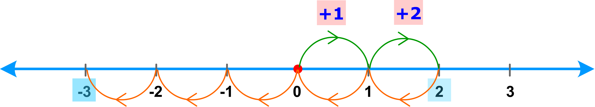
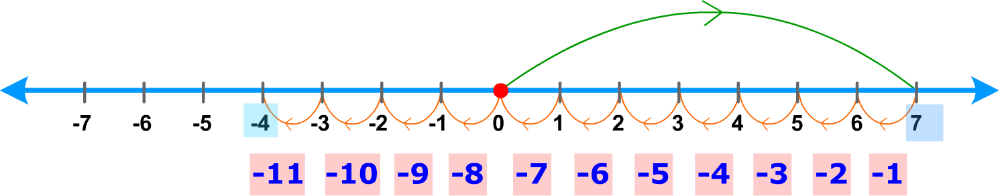

Earlier we discussed the operations of addition, subtraction, multiplication and division on whole numbers.
Observe that in subtractions like
where the second number is larger than the first number, there is no answer in whole numbers.
We shall now try to find these answers by introducing negative numbers.
Consider a number line, with all the whole numbers graphed on it.
All the whole numbers other than zero are to the right of zero.
The number 1 is one unit from 0; the number 3 is three units from 0; and so on .
Let us subtract five from two, “2 – 5”, on the number line.
To find the value of 2 – 5, move 2 units to the right starting from zero; then move 5 units to the left.

We reach at a point which lies to the left of 0 at a distance of 3 units from 0.
We label this point as ‘– 3’, read : “negative 3”; so, we have
2 – 5 = – 3
‘– 3’ is also read as “the opposite of 3.”
The opposite of 3 means 3 units on the opposite side of 0.
Similarly, to compute 7 – 11, we first find the point 7, and then move 11 units to the left.

We reach at a point which lies to the left of 0, at a distance of 4 units from 0.
We label this point as “– 4”, read: “negative 4” or “the opposite of 4”
7 – 11 = – 4
Thus, by introducing such numbers, that is, the opposites of whole numbers, we can find answers to all subtractions of the type ‘a – b’ where a and b are any two whole numbers.